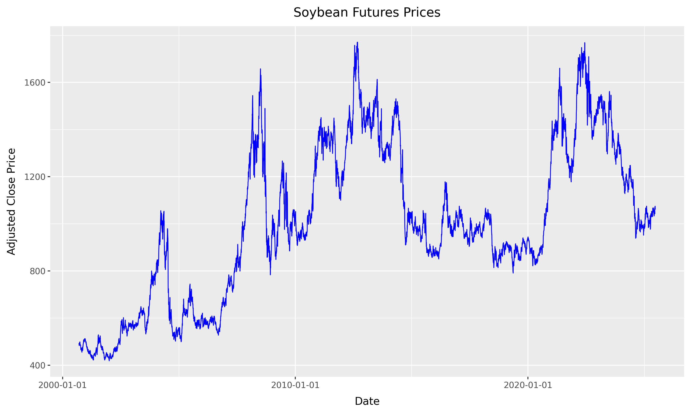
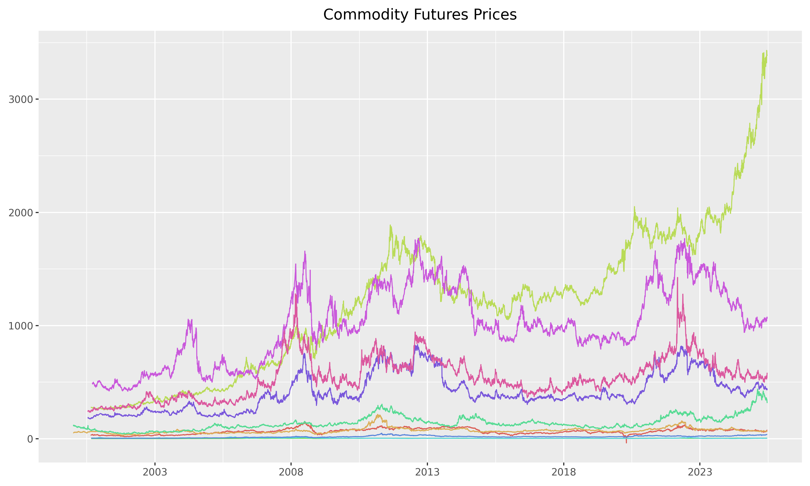
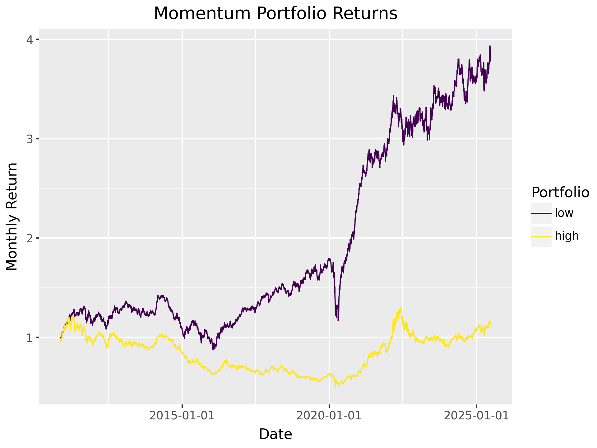

Factor investing in commodities
When using yfinance for commodity futures, we observe only the front-month futures prices, typically rolled automatically.
This allows us to construct:
- Excess returns on fully collateralized long futures positions.
- Momentum from rolling 12-month returns.
- Average Commodity Factor as the equal-weighted return across contracts.
However, we cannot construct basis-related factors:
- Basis requires both front- and second-nearby prices.
- Basis-Momentum needs the term structure slope over time.
Thus, our tests will focus on factors we can construct reliably with yfinance.
Commodity Futures
Yahoo Finance provides daily prices of nearest futures contracts, specifically what they call continuous front-month futures for commodities (e.h., CL=F for WTI Crude Oil). These are automatically rolled contracts and do not represent a specific maturity date.

We can now calculate the daily returns for each commodity futures contract.

We can also compute the descriptive statistics of the daily returns for all commodity futures.

Commodity Factor Portfolios
To form the commodity factor portfolios, we rely on the simple portfolio sort. The idea is simple. On one date:
- Rank commodities according to a particular criterion (e.g., past returns).
- form \(J \geq 2\) portfolios (i.e., homogenous groups) consisting on the same number of stocks according to the ranking (usually \(J=2\), \(J=3\), \(J=5\) or \(J=10\) portfolios are built, based on the median, terciles, quintiles or deciles of the criterion);
- the weight of stocks inside the portfolio is uniform in our case.
- at a future date \(t+1\), report the returns of the portfolios. Then iterate the procedure until the chronological end of the sample.
The outcome is a time series of portfolio returns \(r^j_t\) for each portfolio \(j\) and time \(t\). An anomaly is identified if the \(t\)-test between the first \(j=1\) and the last group \(j=J\) unveils a significant difference in average returns.
We first construct the momentum characteristic, which is the cumulative return of the past 11 months (excluding the most recent month). This is done by calculating the cumulative product of \(1 + r_t\) for the past 11 months.
We will rebalance the portfolios monthly, using the momentum characteristic to sort the commodities into two portfolios.
Interestingly, the low momentum portfolio seems to outperform the high momentum portfolio, which is contrary to the typical expectation in momentum strategies.

Based on the previous insights, we construct a reversal portfolio by taking the difference between the low and high momentum portfolios. In other words, we create a long-short portfolio that goes long on the low momentum portfolio and short on the high momentum portfolio.

We now compare the cumulative returns of the long-short reversal portfolio with the equal-weighted market portfolio. The market portfolio is constructed by averaging the daily returns of all commodities, which gives us a benchmark to assess the performance of our reversal strategy.

We can finally test the significance of the long-short portfolio returns using a t-test. This will help us determine if the average returns of the long-short portfolio are significantly different from zero.
OLS Model:
long_short ~ 1
Coefficients:
Estimate Std. Error t-Statistic p-Value
Intercept 0.0 0.0 2.17 0.03
Summary statistics:
- Number of observations: 3,672
- R-squared: 0.000, Adjusted R-squared: 0.000
- F-statistic not available
Since p = 0.03 < 0.05, we can reject the null of zero mean at the 5 % level. This means that the average return of the long-short reversal portfolio is statistically significant, indicating that the strategy has a positive expected return over the sample period.